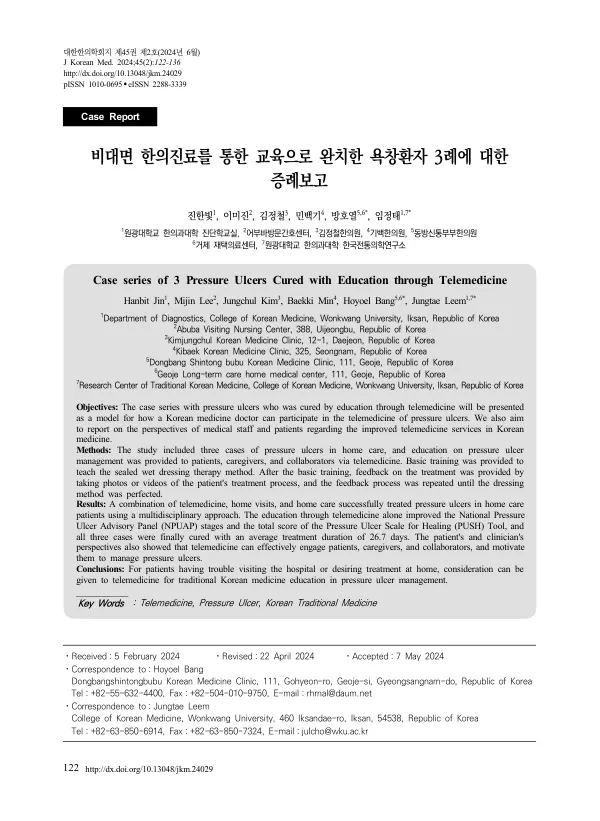

Case series of 3 Pressure Ulcers Cured with Education through Telemedicine
Jin H, Lee M, Kim J, Min B, Bang H, Leem J
Journal of Korean Medicine 45(2):122-136

첫 장 · 오픈액세스First page · open access
논문 소개Summary
욕창은 눌린 자리의 피부와 피하지방, 근육에 혈액순환이 막혀 허혈이 생기면서 궤양이 되는 것입니다. 활동과 이동의 제한, 피부 상태, 순환과 산소, 영양, 습도, 체온, 나이, 통증 감수성, 전신 및 정신 상태, 당뇨병이 위험요인입니다. 오래가면 폐 기능이 떨어지고 패혈증의 원인이 되며 심하면 사망에 이릅니다. 2009년 건강보험 환자표본 자료에서는 전체의 3.2%, 요양병원 입원환자는 8.2%에서 욕창이 생겼습니다.
문제는 욕창이 생기는 사람일수록 병원에 오기 어렵다는 점입니다. 이 증례보고는 그래서 환자를 오게 하는 대신 돌보는 사람을 가르치는 쪽을 택한 기록입니다. 재택 돌봄을 받는 욕창 환자 세 사람을 대상으로, 환자와 보호자와 협업자에게 비대면으로 욕창 관리 교육을 했습니다. 먼저 밀폐 습윤 드레싱 방법을 기본 교육으로 가르치고, 그다음에는 치료 과정을 사진이나 영상으로 찍어 보내면 그에 대한 피드백을 주는 일을 드레싱 방법이 제대로 될 때까지 되풀이했습니다.
비대면 교육과 방문 진료, 방문 간호를 합친 다학제 접근으로 세 사람 모두 욕창이 나았습니다. 평균 치료 기간은 26.7일이었습니다. 교육만으로도 국가욕창자문위원회(NPUAP) 단계와 욕창 치유 척도(PUSH)의 총점이 좋아졌습니다.
숫자 말고 남은 것이 또 있습니다. 저자들은 환자와 임상가의 관점을 함께 조사해, 비대면 진료가 환자와 보호자와 협업자를 실제로 끌어들이고 욕창 관리를 계속할 동기를 준다는 점을 확인했습니다. 욕창은 하루 이틀에 낫는 것이 아니라 매일의 자세 변경과 드레싱으로 낫는 것이므로, 누가 그 일을 계속하게 만드는가가 치료의 절반입니다.
한계는 세 사례이고 대조군이 없다는 점입니다. 저자들은 이 결과를 병원에 오기 어렵거나 집에서 치료받기를 원하는 환자에게 고려해 볼 만한 방식으로만 두었습니다.
A pressure ulcer forms when sustained pressure blocks circulation in the skin, subcutaneous fat and muscle beneath it, producing ischaemia and then ulceration. Restricted activity and mobility, skin condition, circulation and oxygenation, nutrition, moisture, temperature, age, reduced pain sensitivity, general and mental state and diabetes are the risk factors. Left to run, ulcers impair lung function, cause sepsis, and in severe cases end in death. In a 2009 national health insurance sample, pressure ulcers occurred in 3.2% overall and in 8.2% of long-term care hospital inpatients.
The difficulty is that the people who develop them are the least able to come to hospital. This report therefore chose to teach the people doing the caring rather than bring the patient in. Three patients with pressure ulcers in home care were the subjects, and education in ulcer management was delivered by telemedicine to patients, carers and collaborators. Basic training taught the sealed wet dressing method; thereafter photographs or video of the treatment process were sent in and feedback given, repeating until the dressing technique was right.
Combining telemedicine, home visits and home nursing in a multidisciplinary approach, all three ulcers healed, with a mean treatment duration of 26.7 days. Education through telemedicine alone improved the National Pressure Ulcer Advisory Panel stage and the total score on the Pressure Ulcer Scale for Healing.
Something beyond the numbers is recorded too. The authors surveyed the perspectives of patients and clinicians and found that telemedicine genuinely engages patients, carers and collaborators and motivates them to keep managing the ulcer. Pressure ulcers do not heal in a day or two but through daily repositioning and dressing, so who keeps doing that work is half the treatment.
The limitations are three cases without a control group. The authors take the finding only as something worth considering for patients who have trouble visiting hospital or who wish to be treated at home.
인용Cite
Jin H, Lee M, Kim J, Min B, Bang H, Leem J. Case series of 3 Pressure Ulcers Cured with Education through Telemedicine. Journal of Korean Medicine. 2024;45(2):122-136. doi:10.13048/jkm.24029